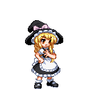
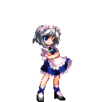
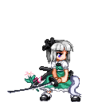

| [ 特 殊 技 ] | ||
| 衝夢 |   |
リーチの長い突き／飛び道具に対して無敵 |
| 昇夢 |  |
小さく跳んで蹴り上げる／中段攻撃 |
| 衝霊気 |  |
踏み込んでの両手突き／中段攻撃（強） |
| 抄霊気 | |
小ジャンプからの足払い／下段攻撃（強） |
| [ 必 殺 技 ] | ||
| 博麗アミュレット |  or（空中可） or（空中可） |
ホーミングする大型の札で攻撃 |
| 昇天蹴 | or |
対空サマーソルトキック |
| 警醒陣 |   or（空中可） or（空中可） |
敵の行動を制限する壁を生成 |
| 幻想空想穴 | or（空中可） |
敵の上空に瞬間移動し急降下キックやや離れた前方に瞬間移動しスライディング |
| [ スペルカード／ 壱符 ] | ||
| 霊符「夢想妙珠」 |  （空中可） （空中可） |
８個の光の弾で攻撃 |
| 夢符「封魔陣」 | |
上空高くまで伸びる結界を生成 |
| 宝符「陰陽宝玉」 | |
手の先に停滞するエネルギー弾で攻撃 |
| [ スペルカード／ 弐符 ] | ||
| 神霊「夢想封印」 | （空中可） |
威力と攻撃範囲に優れる夢想妙珠の上位版 |
| 神技「八方鬼縛陣」 | |
より巨大な結界を生成する封魔陣の上位版 |
| 宝具「陰陽鬼神玉」 | |
ゆっくりと前進する巨大な光の弾を打ち出す |
霧雨 魔理沙 - 普通の魔法使い -
| [ 特 殊 技 ] | ||
| マスィヴボディ | |
強烈なヒップアタック／中段攻撃 |
| グラウンドウィング | |
両手を軸にしての回転キック |
| マスィブブルーム | |
箒で上から叩きつける／中段攻撃（強） |
| パワースウィープ | |
箒で足元を大きく払う／下段攻撃（強） |
| [ 必 殺 技 ] | ||
| ミアズマスウィープ | or |
箒を持って上昇／は打撃、は飛び道具に対して無敵 |
| ウィッチレイライン | or（空中可） |
箒に乗って突進／は飛び道具に対して無敵 |
| グラウンドスターダスト | or |
地面で爆発する謎の瓶を投擲 |
| [ スペルカード／ 壱符 ] | ||
| 恋符「マスタースパーク」 | |
符力ゲージを全て消費し、超強力なビームを放つ |
| 魔符「スターダストレヴァリエ」 | （空中可） |
箒に跨り星屑と共に突進する |
| 儀符「オーレリーズサン」 | |
自分の周囲に四つのビットを装着 |
┣ （空中可） （空中可）
┣
┗ （ﾋﾞｯﾄ4つ時のみ） |
ビットを１個、敵に向かって飛ばす
周囲のビットに攻撃力を持たせる 全てのビットを纏めて敵にとばす | |
| [ スペルカード／ 弐符 ] | ||
| 魔砲「ファイナルスパーク」 | |
より強化されたマスタースパーク |
| 彗星「ブレイジングスター」 | （空中可） |
画面外に一度退避し、巨大な彗星となって突撃する |
| 天儀「ｵｰﾚﾘｰｽﾞｿｰﾗｰｼｽﾃﾑ」 | |
自分の周囲に六つのビットを装着 |
| ┣（空中可）
┣ （空中可）
┣
┗ （ﾋﾞｯﾄ6つ時のみ） |
ビットを一つ、敵に向かって飛ばす
ビットを一つ使用して、一定時間レーザーを照射させる 周囲のビットに攻撃力を持たせる 全てのビットを纏めて敵にとばす |
十六夜 咲夜 - 完全で瀟洒な従者 -
| [ 特 殊 技 ] | ||
| スラッシュＣ | |
高速で目の前を斬り払う |
| クラックソウル | |
飛び上がっての踵落とし／中段攻撃 |
| ハイスラッシュＣ | |
飛び上がって周囲を斬り払う／中段攻撃（強） |
| レディースファスト | |
鋭い踏み込みから敵の足を払う／下段攻撃（強） |
| [ 必 殺 技 ] | ||
| 離剣の見 | or |
攻撃力の無い青いナイフを投げる 投げられたナイフはSボタンでのショットに反応して攻撃開始 |
| クロースアップマジック | or（空中可） |
周囲にナイフを旋回させつつ跳躍する |
| バウンスノーバウンス | or |
画面端で二回まで反射するナイフを投げる |
| バニシングエブリシング | oror |
ボタンに対応した位置へ瞬間移動する |
| [ スペルカード／ 壱符 ] | ||
| 幻符「殺人ドール」 | |
周囲にばら撒かれたナイフが敵に向かって殺到する |
| 時符「プライベートスクウェア」 | ┌
└ |
敵の周囲の時間の流れを止める 敵の周囲の時間の流れを遅くする 発生は上より早い |
| 傷符「インスクライブレッドソウル」 | |
目の前を超高速で切り払いつづける |
| [ スペルカード／ 弐符 ] | ||
| 幻葬「夜霧の幻影殺人鬼」 | |
画面外まで拡散したナイフが一瞬の後に敵に向かって収束する |
| 「咲夜の世界」 | ┌
└ |
符力ゲージを全て転換し相手を長時間停止させる 壱符と同様の時間遅延 |
| 傷魂「ソウルスカルプチュア」 | |
魂をも切り裂く赤い嵐 |
魂魄 妖夢 - 半分幻の庭師 -
| [ 特 殊 技 ] | ||
| 霊斬 | |
目の前を斬り払う／飛び道具に対して無敵 |
| 薙髪 | |
一歩踏み込んでの回し蹴り、足元に強い／中段攻撃 |
| 霊突 | |
踏み込んでの鋭い突き／中段攻撃（強） |
| 成仏 | |
敵の足元から天へ切り上げる／下段攻撃（強） |
| [ 必 殺 技 ] | ||
| 反射下界斬 | or |
飛び道具を弾き返すバリアを生成する |
| 弦月斬 | |
周囲を楼観剣でなぎ払う 打撃に強い |
| 天界法輪斬 | |
周囲を楼観剣でなぎ払う 飛び道具に強い |
| 生死流転斬 | or |
は三回まで追加入力することで突進＞切り上げ＞打ち下しのコンビネーションを行うは単発の下段攻撃 |
| 折伏無間 | or |
敵を掴んで崩す投げ技 とで崩す方向が異なる |
| [ スペルカード／ 壱符 ] | ||
| 人符「現世斬」 | |
神速で敵へと踏み込み擦違いざまに強烈な一太刀を浴びせる |
| 断命剣「冥想斬」 | |
強化された楼観剣で敵を叩き斬る |
| 魂符「幽明の苦輪」 | |
半身が人間部分の動きを一定時間トレースする／ダメージで消滅 |
| [ スペルカード／ 弐符 ] | ||
| 人鬼「未来永劫斬」 | |
敵を切り上げさらに超高速で全方位から追い討ちを仕掛ける |
| 断迷剣「迷津慈航斬」 | |
より強化された楼観剣で全てを切り伏せる |
| 魂魄「幽明求聞持聡明の法」 | |
高い集中で半身を追従させる／ダメージを受けても消えない |